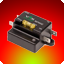

Spike

What is it?
A spike is a relay with three possible states: forward, off,
reverse.
Properties
- Output Module (Digital)
- The Digital Sidecar on the CRIO that this spike is plugged into.
- Output Port (Relay)
- The relay port on the digital sidecar that this spike is plugged into.
See Also